The artwork offers reverent interpretations of scripture, historical accounts, and study. It is not a photographic record of past events; follow the linked sources for the documented details.
The Book of Mormon invites us to come closer to Jesus Christ. Studying its history, language, witnesses, and ancient setting can deepen that encounter. This guide brings promising arguments and difficult questions into the same conversation, with sources you can read for yourself.
Some observations are available to anyone who opens a manuscript or examines an inscription. Other conclusions depend on a scholar’s interpretation. Spiritual witness involves our relationship with God. Each deserves careful attention on its own terms.
Translation: the claim and the historical record
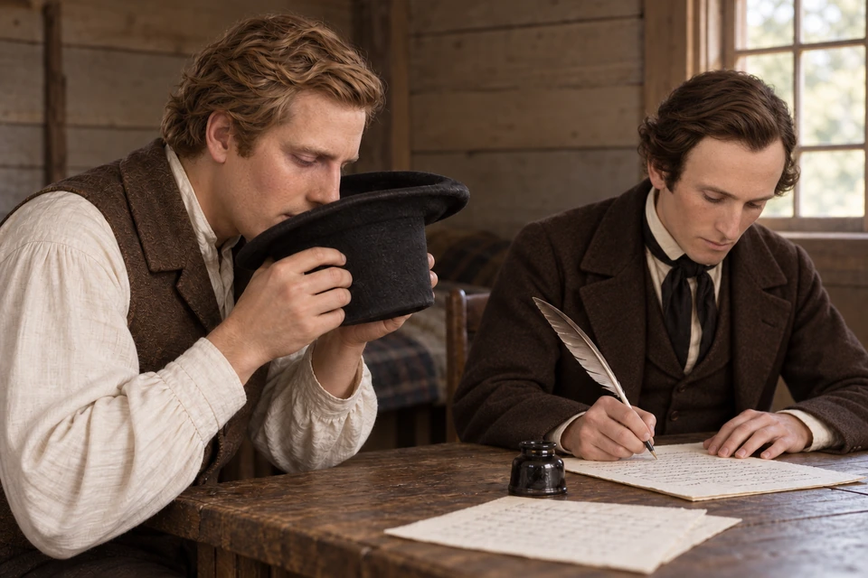
Explore and study
The work of dictation
Joseph attends to the hat while Oliver listens and writes. This interpretation of an 1829 dictation setting invites us to consider the concentration, trust, and practical work involved in receiving and recording the text. Historical accounts guide the scene; they do not preserve this exact session.
What the Church teaches about translation
The Church describes Joseph Smith's translation as revelation, rather than the ordinary work of someone trained to read an ancient language. Its current explanation places almost all of the translation between April and June 1829 and acknowledges that Joseph left few details about the process. That combination matters: there is a clear religious claim, but not a complete contemporary record of each working session.
The short period of concentrated dictation is worth studying. It should not become a claim that researchers possess an uninterrupted daily log or know the exact productive hours. Begin with Joseph, his scribes, the instruments, and the work of dictation before considering what the achievement means for your understanding of his prophetic calling.
Read the Church's current translation explanation.
The instruments and the people in the room
Church historians distinguish the interpreters associated with the plates from a separate seer stone Joseph had obtained earlier. Eyewitness accounts describe the use of these instruments, including placing an instrument in a hat to exclude light while dictating. The historical discussion also acknowledges Joseph's earlier use of a stone in attempts to locate lost objects and treasure.
These details belong in a complete account, even when they differ from a familiar painting. An artist can help us imagine a room; the painting cannot decide which instrument was used at a particular moment. Likewise, a scribe could observe Joseph's posture, hear his words, and record them without seeing whatever Joseph reported seeing. Distinguishing outward observation from the claimed revelatory experience preserves the witnesses' perspective. It also avoids presenting a modern reconstruction as a photograph of something recorded in 1829.
Explore the historical translation accounts.
Explore and study
The people beside the work
Emma pauses with her quill as she and Joseph share a warm glance. Her service as a scribe reminds us that the coming forth of the book also involved time, attention, and help offered within a household. Notice how listening and practical support can make another person’s work possible.
Martin Harris and the substituted stone
Martin Harris wanted to know whether Joseph was simply repeating memorized sentences. In Edward Stevenson’s later account, Martin found a stone resembling Joseph’s seer stone during a break by the river and substituted it when they returned to work. Joseph fell silent, then exclaimed, “Martin! What is the matter? All is as dark as Egypt!” Martin explained that he had wanted to answer people who accused Joseph of reciting words he already knew. Read Stevenson’s account, published February 6, 1882, page 87.
The Church’s historical study places Martin’s work as scribe in the spring and early summer of 1828 and includes this incident. The surviving published account is therefore a later recollection transmitted by Stevenson, rather than a diary entry from the translation room. Read “The Contributions of Martin Harris,” including note 8.
For a believing reader, the story can illuminate Martin’s desire for assurance and his confidence in Joseph’s calling. Its significance rests on how we assess his reported experience; it does not independently demonstrate the unseen process of revelation.
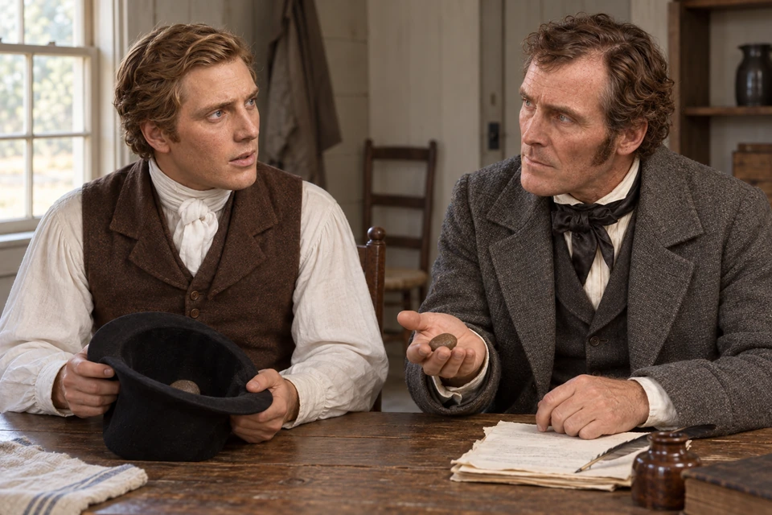
Explore and study
A question about the stone
Martin holds a stone as Joseph turns toward him with a questioning expression. The later account tells of Martin’s attempt to test the translation. Let their exchange lead into the reported story and its source, keeping Martin’s search for assurance in view.
Explore and study
Walk together and listen
Joseph and Emma share a warm glance as they walk along a quiet path. This imagined moment invites reflection on companionship beyond the work at a desk. Consider how making time to listen, speak kindly, and share an ordinary walk can strengthen a relationship.
The manuscripts and the earliest English text
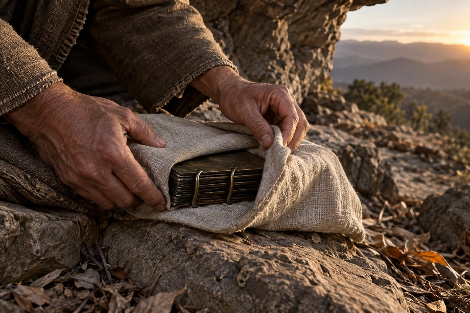
Explore and study
Care for a record that will outlast you
Hands draw a cloth around a record of metal leaves. The act of care invites reflection on preserving something for readers not yet known. What testimony, memory, or lesson could you keep faithfully so that someone else may receive it when the time is right?
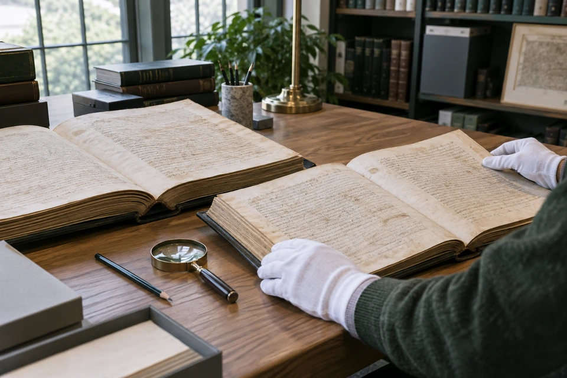
Explore and study
Reading the record carefully
Open manuscripts lie side by side as a reader studies their pages in warm daylight. This imagined research setting invites patient comparison, attentive questions, and respect for the people who preserved the record. What can careful comparison teach us about the way a record reaches its readers?
What survives of the original manuscript
The Joseph Smith Papers publishes images and transcripts of the surviving dictation manuscript. Its editors report that approximately 28 percent of the text survives, sometimes as badly damaged fragments. Much of the deterioration followed the manuscript's placement in the Nauvoo House cornerstone in 1841; water damaged the papers before they were recovered in 1882.
That history changes how we should use the evidence. A surviving passage can preserve a scribe's letters, insertions, and corrections. A missing passage cannot be inspected in the same way. The edition's photographs and differentiated handwriting let readers check the relationship between a visible mark and an editorial reading. They also make uncertainty visible. A reconstructed earliest English text should therefore distinguish readings supported by surviving ink from readings inferred where the original page is lost. The incompleteness is part of the evidence, not something to conceal.
Examine the original-manuscript edition.
Why a second manuscript matters
The printer's manuscript was prepared as a copy for producing the published book. The Joseph Smith Papers presents that document with photographs and a transcript, allowing readers to examine a second stage between dictation and print. It is a manuscript witness to the English text, not a second independent translation of the plates.
The distinction is easy to miss when someone refers simply to “the original.” A dictated page, a copy, and a printed page have different relationships to the wording being studied. Comparing them helps locate changes without automatically explaining them. A copying error, a clarification, and a printer's decision can have different causes.
Explore the printer's-manuscript edition.
Royal Skousen's critical-text project
In textual scholarship, “critical” means examining and comparing the evidence for a text. Royal Skousen's project seeks to recover the earliest English wording by studying the manuscripts and significant printed editions. The project makes variant readings accessible rather than treating every edition as interchangeable.
This work gives readers a disciplined way to ask about changes. First identify the witnesses to a reading. Then ask whether the difference concerns spelling, punctuation, grammar, or meaning.
Explore the Critical Text Project.
Careful scholarship includes editorial independence
Skousen's own account describes independent transcriptions, comparison with physical manuscripts, and attention to photographs that sometimes obscured important details. He also explicitly distinguishes his project's scholarly findings from ecclesiastical approval. Cooperation with Church institutions did not make every proposed reading or interpretation an official Church position.
That distinction helps a reader appreciate the work on its own terms. A facsimile preserves what a document contains; an editorial reconstruction proposes what an earlier reading probably was. Both can be valuable, but they are not identical.
Read Skousen's account of the project.
The English Bible is part of the discussion
Skousen's research on biblical quotations recognizes extensive relationships with the King James Bible. His analysis also discusses readings that reflect the history of English biblical translation, including cultural renderings and readings he identifies as problematic. He argues that these features complicate a uniformly literal model of translation from the plates.
This is a significant qualification within his own believing scholarship. The presence of unusual older English elsewhere in the book does not erase the biblical layer. A responsible account must explain both.
Study Skousen's analysis of biblical quotations.
The work of printing and publication
The Book of Mormon reached print in 1830 through a substantial practical undertaking. Egbert B. Grandin agreed to produce 5,000 copies for $3,000, with Martin Harris providing financial backing. The Church’s history follows the preparation, printing, and publication of the book, including the costs and risks borne by those involved. Read Printing and Publishing the Book of Mormon.
The surviving Grandin press connects that history to the tools and labor of a working print shop. It offers tangible context for the publication of the English text, while the claim of divine translation remains a distinct question. Explore the Church History Museum’s Grandin press account.
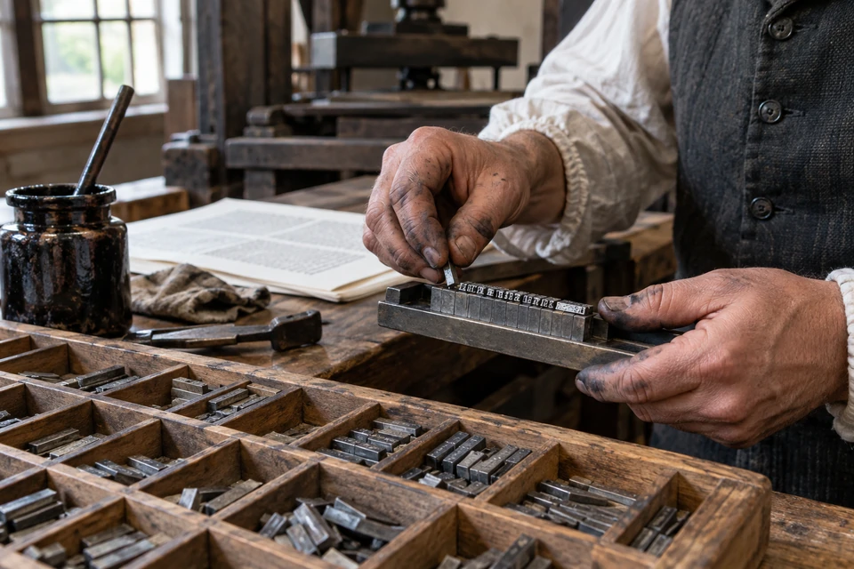
Explore and study
From manuscript to printed page
A printer arranges small pieces of type with ink-marked hands. The scene brings the patient labor of making a book into view: choosing, placing, checking, and beginning again. Consider the many hands that help a message move from one person’s words into another person’s reading.
What can the English language tell us?
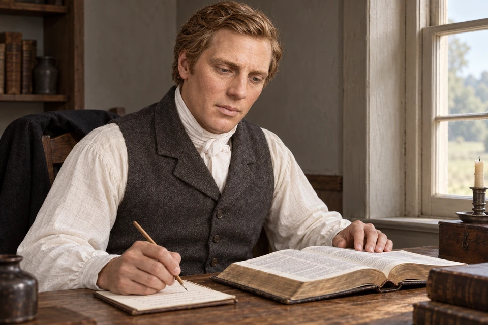
Explore and study
Make time for the written word
Joseph studies an open Bible with a writing tool close at hand. His attention invites a slower reading: notice a phrase, record a question, and return to the passage in context. What might patient study help you see that a hurried reading would miss?
Stanford Carmack: look at sentence patterns
Stanford Carmack's command-syntax study examines how forms of “command” connect to another verb. Compare the ordinary possibilities “ordered them to leave” and “ordered that they should leave.” The important question is not whether either construction can occur, but how the alternatives are distributed through a substantial text.
Carmack reports that Book of Mormon command patterns differ markedly from those in the King James Bible and find closer parallels in earlier English material, including a work printed by William Caxton in 1483. He interprets this as support for Joseph receiving specific wording rather than producing it himself. That last step should be identified as his inference. Readers can investigate the counted constructions and comparison texts without treating the resulting translation model as an experimentally demonstrated fact. The study concerns the language of the English text; it does not date the events narrated in that text.
Read Carmack's command-syntax study.
Why unusual grammar deserves more than a joke
In a later grammatical study, Carmack considers combinations of features rather than isolated archaic words. Examples include relatives referring to people, older verbal constructions, and forms judged nonstandard by later usage. He compares the earliest Book of Mormon wording with historical English, biblical language, imitation-biblical writings, and Joseph's early personal writing.
The method invites a better question than whether a sentence sounds polished to a modern reader: what grammatical pattern is present, and where else is that pattern found? A useful comparison should preserve the actual wording under examination. Modernized editions may remove the feature being discussed.
Examine Carmack's grammatical comparisons.
What the Early Modern English proposal does not claim
Carmack's 2025 question-and-answer essay acknowledges that the Book of Mormon is not entirely Early Modern English. It also says that the precise process by which the proposed English translation was produced is unknown. He argues strongly for revealed wording, but the historical language patterns and an account of the unseen translation process remain different kinds of claims.
Early Modern English is a period in the history of English; it is not a language spoken by Nephi. Identifying an older English construction would therefore concern the translation's English expression, not directly establish the antiquity of its narrative. Nor does the proposal identify a particular earlier English translator through documentary evidence. Readers can find the linguistic argument suggestive while withholding judgment about mechanisms that cannot be observed. Keeping those limits clear allows interest in the research without turning an interpretive model into a required article of faith.
Read Carmack's questions and answers.
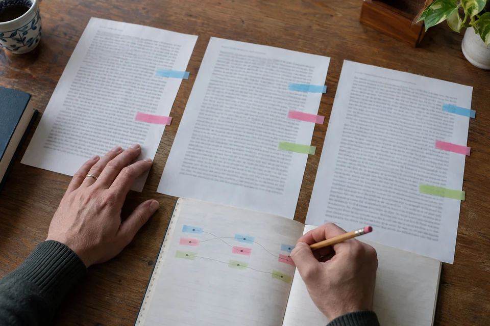
Explore and study
Compare the words with care
A pencil follows connections across three working copies. Careful comparison begins by looking closely at the wording, then asking whether the proposed explanation accounts for it. Read the researchers' own arguments, including where they disagree, before deciding what a pattern can establish.
Follow Carmack's command-syntax comparison, then consider Davis's alternative analysis.
Bring a question from this picture into the reading. Ask about this part of the study.
A serious alternative interpretation
William L. Davis's 2025 study accepts that the discussion cannot be reduced to copying King James vocabulary. He challenges the inference that archaic features necessarily lay outside Joseph's linguistic resources. Davis emphasizes older religious books still read in the nineteenth century and the difference between a person's everyday speech and a deliberately sacred register. He proposes that Joseph actively formulated the English wording.
This disagreement helps identify the real question. It is not simply whether an older parallel exists, but whether that parallel excludes the linguistic resources and habits available to the person dictating. Davis's explanation is itself an argument to assess, not a complete recording of Joseph's mental activity. Reading both positions lets a visitor distinguish shared observations from disputed explanations. Careful study makes that comparison possible without implying that all researchers have reached the same conclusion.
A household that made room for the work
The story of the translation also leads into a family's fields, a journey, and the daily work of opening a home. In June 1829, Peter and Mary Whitmer welcomed Joseph Smith and Oliver Cowdery to their home in Fayette, where the translation was completed. Explore the Peter and Mary Whitmer home.
Three remembered experiences help us understand how the Whitmers connected their practical service with faith. These accounts reach us through later histories, interviews, and family recollections. Read them with appreciation for what their tellers wanted to preserve, while noticing who recorded each story and when. A later memory can be meaningful without becoming a contemporary transcript.
You might study these accounts together as a family: let one person follow the sources, another notice the acts of service, and another choose a question for prayer. Leave room for each person to speak honestly.
David's fields and the journey he wanted to make
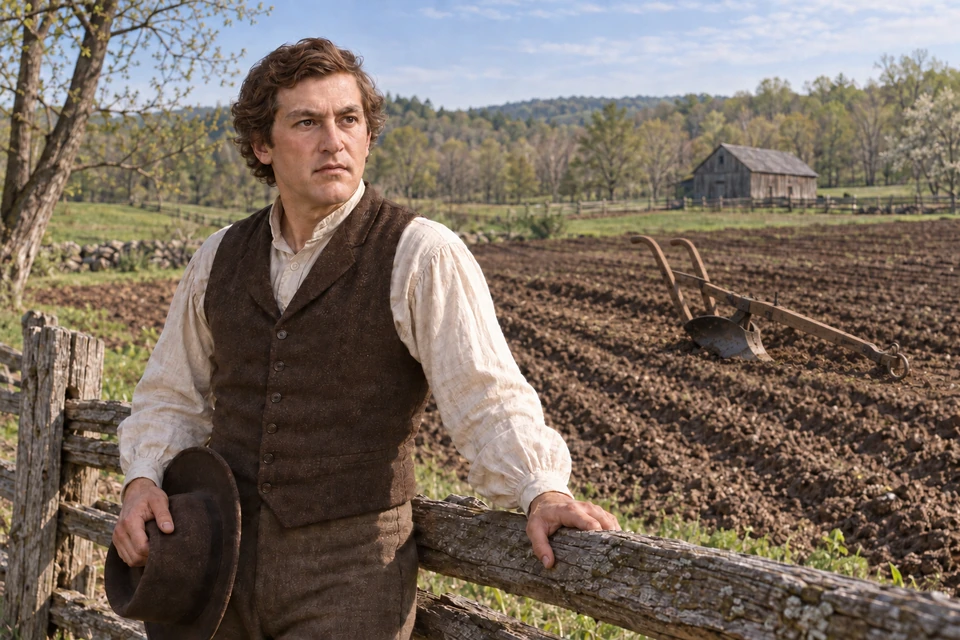
Explore and study
Help for the journey
David pauses beside the worked field, a plow resting nearby. This scene draws on the later account of overnight plowing; Lucy Mack Smith recorded separate help with harrowing and spreading plaster. As you compare the accounts, consider how practical help can free another person to serve.
Lucy Mack Smith's 1845 history describes David facing urgent farm work before he could collect Joseph and Oliver. In that account, he harnessed his horses to a harrow and finished two days' work in one. The next morning, he found that the plaster intended for his fields had already been spread. His sister reported seeing three men doing that work; she had assumed David had hired them. The family understood the unexpected help as divine assistance. Read Lucy's account of the harrowing and the three men spreading plaster.
A different recollection, quoted in the Church's Revelations in Context, describes David finding several acres plowed overnight. Plowing, harrowing, and spreading plaster are distinct tasks. The accounts should be read in their own wording rather than blended into one detailed reconstruction. Compare David's reported recollection.
These stories invite a practical question: what makes it possible for someone to answer a call to serve? Sometimes another person's willingness to finish a task, provide a ride, or take responsibility for a household opens the way. Think of someone whose quiet help has given you time to do something that mattered. How could you offer that kind of help this week?
A traveler beside the wagon
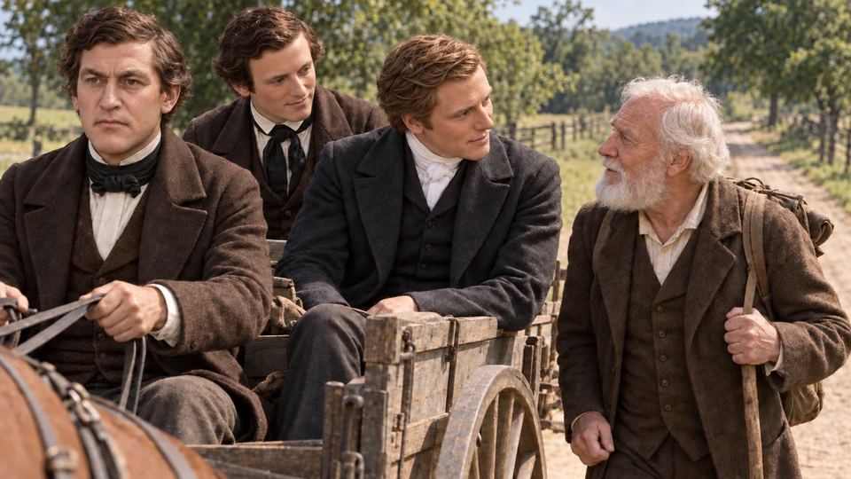
Explore and study
An offer of hospitality
An ordinary offer of a ride becomes a remembered moment of sacred purpose in David’s later account. This artistic interpretation invites us to notice the person beside us. The faces, setting, and precise arrangement of the encounter are imagined, not a contemporary visual record.
David later told Orson Pratt and Joseph F. Smith of an encounter during the return journey with Joseph and Oliver. An older man greeted them beside their wagon. When offered a ride, he replied, “No, I am going to Cumorah.” David said the man then disappeared and identified him as the messenger carrying the plates. The Church's history manual reproduces this report and cites its publication in the Millennial Star on December 9, 1878. It is David's recollection many decades after the journey. Read the traveler account and its source notes.
The memorable exchange belongs to the history of David's testimony. It does not supply a measured route or settle a modern geographical model. As you consider it, notice how the story moves from an ordinary offer of hospitality to David's sense of sacred purpose. What habits of attention help you make room for the person beside you, even before you understand their story?
Mary's work and her own witness
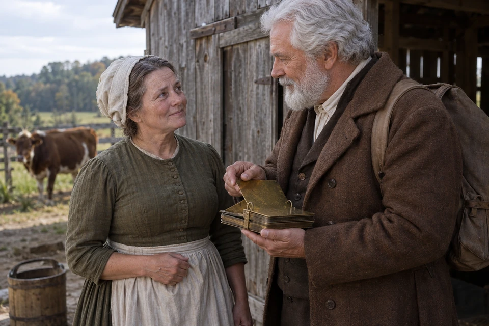
Explore and study
Encouragement amid the work
Mary’s later family account remembers encouragement in the midst of demanding household work. This interpretive scene honors that experience without claiming an authenticated likeness or an exact view of the plates. Whose quiet service could you notice, thank, or help carry today?
The work of hosting also fell heavily on Mary. The Church's account draws on a grandson's report that she was burdened by caring for additional people. While going to milk the cows, she encountered a stranger who showed her the plates, turning their leaves, and encouraged her to continue faithfully. The cited report appeared in Andrew Jenson's Historical Record in October 1888. This preserves a family recollection of Mary's experience, rather than a statement written by Mary in 1829. Read Mary's story and the household's contribution.
Her place in this history invites us to notice the person carrying work that others may overlook. Hospitality takes time, strength, food, and patience. Acknowledging that cost need not diminish its generosity. Mary's story offers a moment to consider both receiving encouragement and giving it: who around you needs their effort to be seen, thanked, or shared?
Read Mosiah 2:17 alongside Doctrine and Covenants 14:8, the invitation given to David. Consider how service and witness meet in a life of discipleship. Continue into the formal witness statements, explore the people of Church history, or return to the artwork gallery to revisit these stories through their pictures.
The witnesses: read the claims in their own words
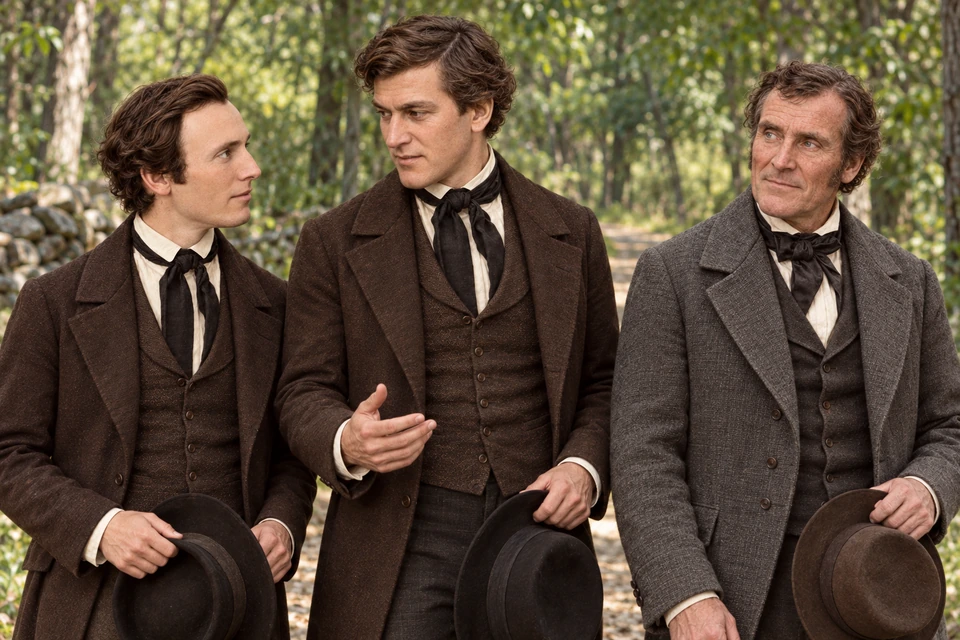
Explore and study
Three witnesses, distinct voices
Oliver Cowdery, David Whitmer, and Martin Harris pause in an imagined conversation. Their different faces invite us to hear each witness as a person with his own history. Continue into their statements and the separate sequence of Martin’s reported experience, rather than treating this grouping as the angelic encounter.
The Three Witnesses: read the statement and its history
The Three Witnesses' published statement reports an angelic showing of the plates and a divine affirmation of the translation. The Joseph Smith Papers provides the 1830 printed text alongside an editorial account of its transmission. Its editors note that the earliest surviving manuscript copy is in Oliver Cowdery's handwriting, including the other witnesses' names; that copy is not an original sheet of separate autographs.
This does not establish that the witnesses disowned the statement. It tells us what kind of document survives. Read the testimony's claim, then distinguish that claim from the provenance of the surviving copy.
Read the Three Witnesses' statement and source history.
The Eight Witnesses: a different kind of testimony
The Eight Witnesses' statement emphasizes seeing and handling plates shown by Joseph Smith. Its wording describes their appearance and workmanship. It should not be expanded into an assay establishing purity, an independent translation of the engravings, or an archaeological excavation. Those are different procedures, and they are not what the statement reports.
The distinction gives this testimony its particular place beside that of the Three. Readers are considering a reported tangible encounter as well as a reported angelic encounter. The evidentiary question is how to evaluate those reports, not how to transform them into experiences the speakers never described.
Read the Eight Witnesses' statement.
Continuing testimony and differing recollections
The Church's historical overview describes repeated affirmations by witnesses, including after estrangement from Joseph or the Church. It also acknowledges that surviving reports are not equally reliable: some were recorded long afterward, and some passed through interviewers with their own interests. The men named in the statements were connected through early Church involvement and family relationships.
Persistence can matter when assessing sincerity. It does not turn every later interview into a verbatim record or make connected witnesses statistically independent observations. A useful comparison identifies the speaker, recorder, date, and distance from the event.
Literary patterns: read, compare, and test
A book that rewards a second reading
A reader can encounter the Book of Mormon first as a sequence of journeys, sermons, conflicts, and encounters with Jesus Christ. A second reading brings other questions into view. Why does a passage return to its opening language? Who is speaking, and who has chosen to preserve that speech? What changes when a father retells his conversion to his son? Literary study begins with these questions and asks us to look closely enough to explain what we notice.
Grant Hardy’s Understanding the Book of Mormon, published by Oxford University Press in 2010, organizes its reading around Nephi, Mormon, and Moroni. His approach examines how narrators arrange documents, dialogue, and parallel stories while setting aside the question of ultimate authorship. That distinction makes careful discussion possible among readers with different beliefs. A person can recognize a meaningful literary structure before deciding what that structure implies about the book’s origin. Hardy, Understanding the Book of Mormon.
For this study, keep three questions beside one another: What is actually present in the text? Which explanation best accounts for it? How much can that explanation establish? The first encourages observation, the second invites investigation, and the third keeps an interesting discovery from becoming an exaggerated claim.
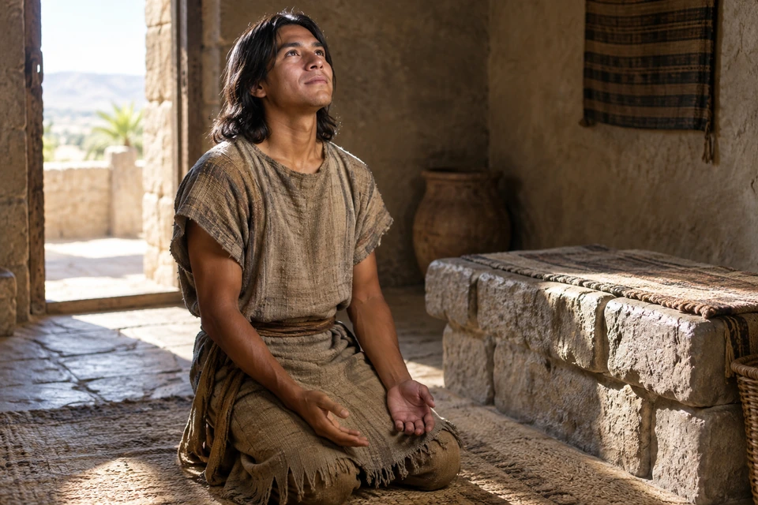
Explore and study
Hope in a prayer for mercy
A man pauses in prayer, his expression opening toward hope. Inspired by Alma’s account, this reflection invites us to consider the turning of a heart toward the Savior. Consider the hope that grows when a person turns toward Christ for mercy.
Alma 36: turning toward Christ at the center
Chiasmus arranges related elements in reverse order, such as A–B–C–B′–A′. A simple illustration is an original sentence: “We carried the record into the wilderness; through the wilderness we carried the record home.” Reversal can connect an ending to a beginning and emphasize what happens between them.
John W. Welch’s analysis of Alma 36 proposes an extended pattern around Alma’s remembrance of, and appeal to, Jesus Christ. His interpretation treats the chapter as a deliberately shaped account of conversion. Read the entire chapter before following an outline; the outline is an interpretation of the writing, not a substitute for it. Welch, “Chiasmus in Alma 36”.
Several correspondences are easy to investigate directly:
| Earlier in the chapter | Later in the chapter |
|---|---|
| Keeping the commandments and prospering, verse 1 | The same counsel returns, verse 30 |
| Remembering ancestral captivity and deliverance, verse 2 | Remembering ancestral deliverance, verses 28–29 |
| Loss of bodily strength, verse 10 | Strength returns, verse 23 |
| Distressing remembrance of sins, verse 17 | That distress is relieved, verse 19 |
Between suffering and relief, Alma remembers his father’s teaching and appeals to Jesus in verses 17–18. Whatever judgment a reader reaches about the complete pattern, this movement from anguish to mercy belongs to the passage itself. Notice how the return to earlier subjects gives the account a changed emotional direction. Alma 36.
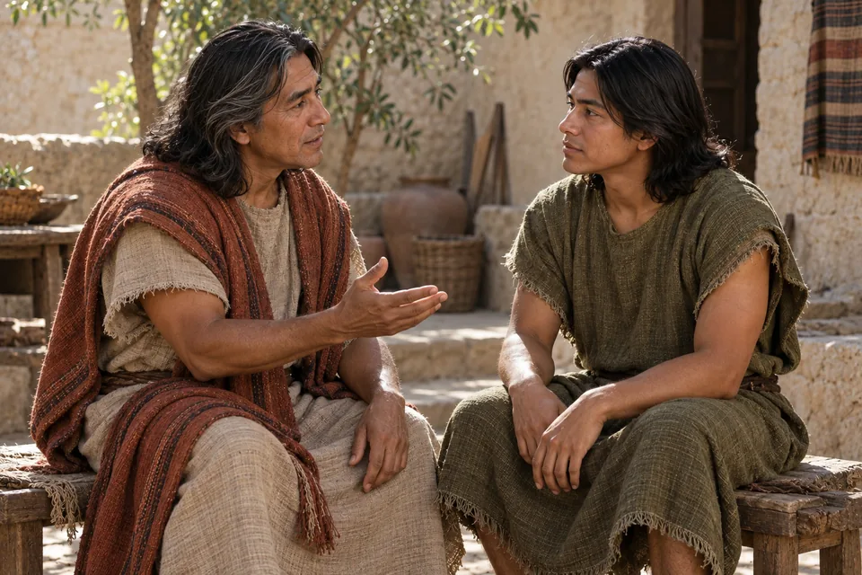
Explore and study
A father shares the mercy he remembers
Alma speaks while Helaman listens, their faces turned toward one another. Before tracing the patterns in Alma 36, hear the father telling his son how remembering Jesus Christ changed his despair into joy. What would you want someone you love to remember from your own experience of mercy?
Bring a question from this picture into the reading. Ask about this part of the study.
How strong is the proposed pattern?
Welch published fifteen criteria for evaluating proposed chiasms. They invite attention to matters such as meaningful boundaries, convincing correspondences, balance, density, and repetitions that fall outside the proposed arrangement. His framework recognizes that confidence about intentional composition can vary. A long diagram deserves especially careful testing because an analyst has many opportunities to select convenient words or ideas. Welch, “Criteria for Identifying and Evaluating the Presence of Chiasmus”.
Earl M. Wunderli challenged the extended Alma 36 analysis in Dialogue. He argued that some proposed pairs depend on paraphrase and that additional occurrences of important words do not follow the suggested reversal. His criticism gives readers a concrete test: mark every occurrence of a proposed key term, including inconvenient ones, and compare the diagram with the full passage. The scholarly disagreement concerns the strength and explanatory value of the proposed structure. Wunderli, “Critique of Alma 36 as an Extended Chiasm”.
Boyd F. Edwards and W. Farrell Edwards developed statistical methods for examining whether specified arrangements could occur by chance. Their work considers repeated elements and opportunities for patterns within larger texts. Such calculations depend on the defined elements and the model of chance. A small probability under a random-order model does not supply a probability that a book is ancient or divinely revealed; those are different questions. Edwards and Edwards, “Does Chiasmus Appear in the Book of Mormon by Chance?”.
Try a smaller passage next. In Alma 41:13–14, the sequence good, righteous, just, merciful is followed by counsel moving through mercy, justice, righteousness, and goodness. The return of the vocabulary supports the passage’s discussion of restoration. Read the surrounding argument and ask how the arrangement helps explain what a person gives and receives. This example allows a reader to examine verbal order without first accepting a large reconstruction. Alma 41:12–15.
Voices and records within the book
Explore and study
Let a careful question guide the comparison
A reader compares a book, notes, and an illustrative scatterplot. The chart suggests the work of asking how patterns differ; its dots do not reproduce the findings of a named authorship study. Consider how checking the samples and assumptions can make a conclusion more responsible.
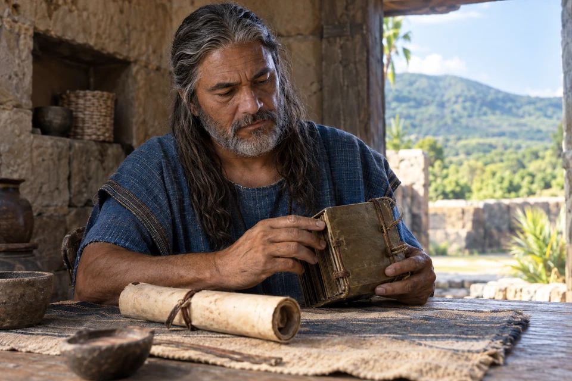
Explore and study
Receive the voices of the record
A reader attends closely to a record held in his hands. His quiet concentration invites us to slow down, notice who is speaking, and consider why a testimony was preserved. What would you want a future reader to understand about the faith you hope to pass on?
Can a computer recognize different voices?
Stylometry measures features of writing and compares their distributions. Depending on the study, those features may include frequent words, recurring word combinations, or vocabulary diversity. The important questions concern the samples and the comparison: which passages were assigned to which speaker, which writers were included, and which features the method could reliably distinguish.
Wayne A. Larsen, Alvin C. Rencher, and Tim Layton’s 1980 study reported differences among Book of Mormon speaker samples and between those samples and selected nineteenth-century writers. It helped establish the modern statistical debate over the book’s authorship. Its conclusion supports distinguishable styles under its particular preparation and analysis; the stronger inference to separate ancient authors requires additional assumptions about quotation, editing, and translation. Larsen, Rencher, and Layton, “Who Wrote the Book of Mormon? An Analysis of Wordprints”; the authors’ later presentation.
David I. Holmes reached a different result in a 1992 paper in the Journal of the Royal Statistical Society. His vocabulary-richness measures did not separate Book of Mormon samples into consistent prophet-by-prophet groups. Joseph Smith’s personal writing did form a separate cluster, while much of the scriptural material grouped together. Holmes interpreted the wider findings as supporting Smith’s prophetic voice, drawing on historical arguments as well as statistics. His study therefore cannot accurately be summarized as a straightforward match between the Book of Mormon and Smith’s ordinary prose. Holmes, “A Stylometric Analysis of Mormon Scripture and Related Texts,” especially conclusions, pp. 116–118.
Matthew L. Jockers, Daniela M. Witten, and Craig S. Criddle used Delta and nearest shrunken centroid classification in 2008. Their seven-candidate comparison produced results they interpreted as supporting a nineteenth-century composition involving Sidney Rigdon, Solomon Spalding, and Oliver Cowdery. This is a real competing result in the research literature, and a balanced account should acknowledge it. A classification result still depends on which possible authors the analysis permits. Jockers, Witten, and Criddle, “Reassessing Authorship of the Book of Mormon”.
In 2011, G. Bruce Schaalje, Paul J. Fields, Matthew Roper, and Gregory L. Snow extended the method to address an open set of possible authors and differing text sizes. Their reanalysis produced markedly different results. The central issue is understandable without advanced mathematics: an unknown text may belong to somebody outside the list supplied to the computer. A method needs a meaningful way to handle that possibility. An “unknown” result does not identify an ancient author, but it prevents the nearest listed candidate from automatically becoming the answer. Schaalje and colleagues, “Extended Nearest Shrunken Centroid Classification,” DOI 10.1093/llc/fqq029.
Imagine comparing an unsigned letter only with samples from three neighbors. One neighbor will probably be the closest match even if a cousin wrote it. This hypothetical illustrates why “best match among these candidates” and “identified author” need separate wording. It also shows why findings should be evaluated with historical information about access, chronology, and the production of the text.
Modern authorship research treats changes in subject and genre as substantial challenges. Experiments on controlled corpora show why a method must distinguish a writer’s habits from the characteristics of an essay, conversation, or topic. Applied here, that calls for particular care when comparing scriptural narration with personal correspondence. “Cross-Domain Authorship Attribution Using Pre-trained Language Models”. Research comparing different feature sets likewise shows that their usefulness depends on the dataset. Sari, Stevenson, and Vlachos, “Topic or Style?”.
Translation adds another layer. Mormon 9:32–34 describes the record’s language and writing system as changed over time and anticipates interpretation. Those are claims within the text. English-language measurements alone cannot recover an unavailable source-language manuscript or decide how much of an observed style belongs to a source, editor, or translator. That is a limit of the inference, even when the numerical comparison is competently performed. Mormon 9:32–34.
Names that invite a closer reading
Some linguistic proposals concern possible wordplay concealed by translation. Matthew L. Bowen argues that Nephi’s name may be connected with Egyptian nfr, associated with goodness or beauty, and reads the repeated goodness language at the beginning and end of Nephi’s writings as an intentional frame. This is an attributed etymological and literary proposal. The exact source-language spelling of the name is unavailable for independent comparison. Bowen, “Nephi’s Good Inclusio”.
The observable English pattern can be studied first. Nephi begins with his parents, learning, afflictions, and knowledge of God’s goodness. Near his conclusion, he again invites participation in God’s goodness. Reading those passages together directs attention to what he wants his audience to receive. The framing remains available for reflection even while the proposed etymology is evaluated separately. 1 Nephi 1:1–3; 2 Nephi 33:10–15.
Bowen offers a related reading of Benjamin’s sermon: the traditional meaning “son of the right hand” is set beside the people’s becoming Christ’s children and their promised place at God’s right hand. His argument proposes deliberate name-related rhetoric. These expressions also belong to a broader biblical religious vocabulary, so their occurrence alone cannot establish the language or date of composition. Bowen, “Becoming Sons and Daughters at God’s Right Hand”.
Read Mosiah 5:7–10 slowly and notice whose name the people are asked to receive. The sermon turns their attention to Christ and to living faithfully within that relationship. A discussion of wordplay is most useful when it helps readers attend to this invitation rather than making the proposed pun carry the entire weight of an origin argument. Mosiah 5:7–10.
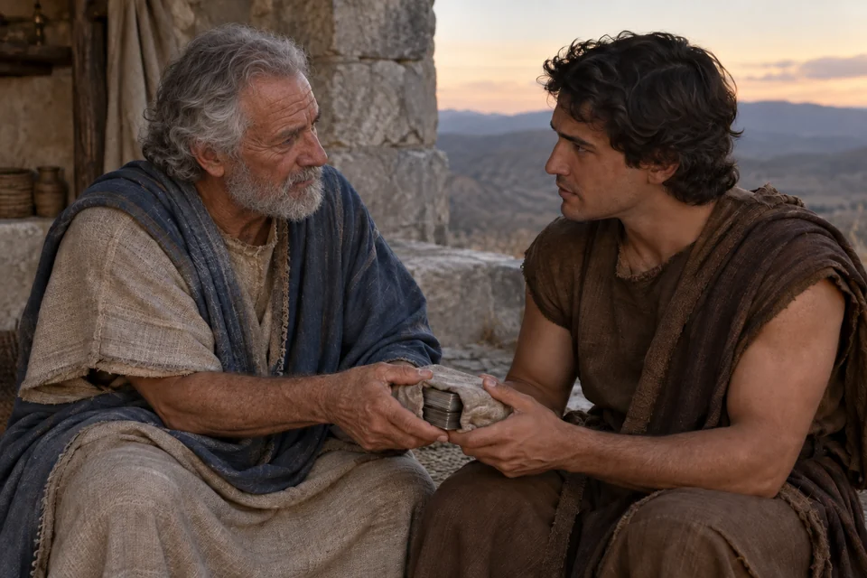
Explore and study
A record entrusted to his son
Mormon and Moroni hold the wrapped record between them. An aging father is placing more than an object in his son's care: the words will continue beyond his own voice. Read Mormon 6:6 and notice the small record he preserves for Moroni amid the danger facing their people.
Bring a question from this picture into the reading. Ask about this part of the study.
Records within a record
Narrative complexity becomes clearer when we follow how accounts are introduced and brought together. Mosiah 9 changes into Zeniff’s first-person account. His opening includes both sympathy toward the people he had been sent to spy on and an admission of excessive eagerness to recover ancestral land. This is an invitation to read a narrator’s retrospective judgment alongside his description of events. Mosiah 9:1–4.
In Mosiah 25, records of Zeniff’s people and Alma’s people are read to an assembled audience. Their response includes joy for deliverance, sorrow for losses, and thanksgiving. Reading itself becomes an event within the story: remembered experiences shape a community that did not experience them all together. This is a concrete literary connection a visitor can follow directly. Mosiah 25:5–11.
Such features give a historical-origin proposal material to explain. They also give literary readers material to analyze. Complexity alone is not a test that distinguishes history from fiction, and several devices in one text should not automatically be counted as independent proofs. A stronger conversation specifies the feature, examines plausible alternatives, and explains what additional evidence would help discriminate among them.
As you continue, choose one passage and write three short notes: a feature you can point to, an interpretation you find persuasive, and a question that remains open. Then return to the passage’s invitation. Literary discovery can deepen attention, gratitude, and thoughtful faith while leaving room for careful scholarship and honest disagreement.
Ancient context: journeys, names, and material records
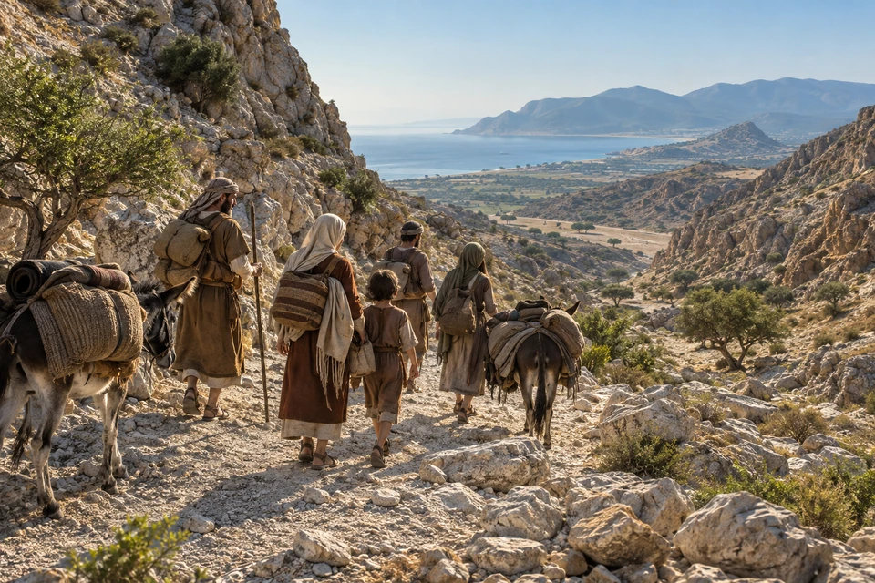
Explore and study
Faith along an uncertain road
Travelers move together through a rugged landscape, carrying what they need for the next part of the journey. The scene evokes shared effort and the uncertainty of leaving familiar ground. Consider the patience and care a family needs while the road ahead remains uncertain.
Follow the text before drawing a map
Nephi's account gives readers more than a generic desert journey. It describes travel generally south-southeast, stops for provisions, hunting, family grief, and a burial at a place already called Nahom. Read those details together in 1 Nephi 16:13–34. The difference between a place the travelers name and a place with an existing name matters when evaluating proposed geographical connections.
The next chapter describes an eastward course followed by arrival at a coastal place the travelers call Bountiful because it provides food. Nephi then receives a command to build a ship. These details supply questions for fieldwork: could a proposed route reach a coast with the resources the narrative requires? 1 Nephi 17:1–16.
An instructive study activity is to list the textual requirements before looking at any modern candidate. This helps keep the proposed map accountable to the record rather than quietly changing the requirements to fit a favorite location.
Nahom: a real inscription and a proposed connection
Three ancient South Arabian limestone altars from the Bar'an temple near Marib, Yemen, name a donor associated with the Nihm tribe. Their consonantal designation includes NHM. Warren Aston argues that this ancient attestation is an important connection with the Book of Mormon's Nahom. His later study discusses revised dating earlier than initial reports and describes the inscription's tribal context. Warren P. Aston, “A History of NaHoM,” BYU Studies 51:2.
The distinction is essential: the altars are actual archaeological objects; identifying their NHM with Nephi's Nahom is an interpretation. They do not name Lehi or Ishmael, locate Ishmael's grave, or record a journey to America. The consonants alone do not supply the Book of Mormon's English vowels. The proposed connection brings together name, place, and chronology; the inscription itself does not say that Ishmael was buried there.
Older publications date the altars differently. Aston’s later study places the attestation before the period of Lehi’s proposed journey. The dates remain scholarly estimates; they do not establish an altar from exactly 600 BC.
The eastward turn and Bountiful
Explore and study
Hope beside the sea
A green coastal inlet opens between rugged hills and quiet water. This imagined landscape invites us to pause with the relief of reaching a place of abundance after a difficult journey. Consider the gratitude that can grow when a long road opens toward a new beginning.
Kent Brown links the Nahom proposal with the regional setting of the incense routes and the narrative's later eastward movement. This is a geographical argument joining several observations, rather than a second inscription independently naming Nephi's route. Readers can examine how much of the argument rests on ancient routes, tribal geography, and modern reconstruction. Kent S. Brown, “Nahom and the Eastward Turn”.
Field researchers have examined the green coastal pockets of southern Oman as possible settings for Bountiful. Aston favors Khor Kharfot at Wadi Sayq and discusses competing proposals, including Khor Rori. The interest lies in a combination of terrain, water, vegetation, access, and possible shipbuilding resources. Warren P. Aston, “Into Arabia”.
A plausible landscape is not a recovered campsite. Compare which requirements a researcher considers satisfied, which depend on ancient environmental conditions, and which alternatives remain possible. None of these proposals conclusively identifies Nephi's shipyard.
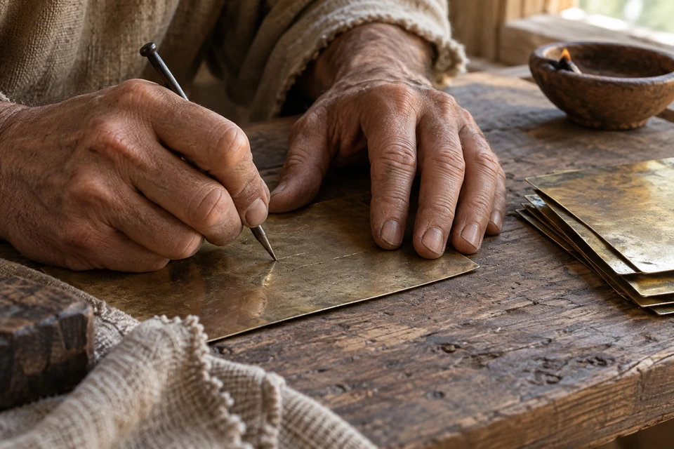
Explore and study
Words worth preserving
Hands guide an engraving tool across a metal sheet. The close view draws attention to the deliberate work of leaving a record for others. What makes a testimony worth the effort of preserving it for someone you may never meet?
Writing sacred words on metal
Ancient people did sometimes preserve religious writing on precious metal. The National Etruscan Museum documents three gold sheets from Pyrgi, dated to the end of the sixth century BC. Two bear Etruscan texts and one a related Phoenician dedication. They concern a sanctuary and its dedication, not the Book of Mormon. National Etruscan Museum, “Lamine d'oro da Pyrgi”.
The British Museum also preserves the Petelia gold tablet, a small Greek religious text dated to the third–second centuries BC. Its catalog distinguishes the earlier tablet from its later Roman pendant case. British Museum, object 1843,0724.3.
Such objects answer a limited but meaningful question: writing religious material on metal was a real ancient practice. They do not establish the existence, size, contents, or provenance of Joseph Smith's plates. A short dedication on a sheet of gold and a long historical record are different kinds of object. The museum records let us examine the actual objects and the specific ancient practices they document.
Names: a promising field that needs careful controls
Names are useful because inscriptions can preserve forms that ordinary historical narratives overlook. Paul Hoskisson examines Alma as a Semitic personal name, drawing attention to evidence that complicates the assumption that it must be a modern feminine name. Paul Y. Hoskisson, “What's in a Name? Alma as a Hebrew Name”. Later work revisits additional attestations rather than treating the first proposal as the last word. Neal Rappleye and Allen Hansen, “More Evidence for Alma as a Semitic Name”.
A name's ancient attestation demonstrates that such a form existed; it does not demonstrate that the person in the inscription is the Book of Mormon character. A careful entry should show the underlying spelling, language, approximate date, and proposed pronunciation. Similar sounds can arise by coincidence, and a familiar English spelling can conceal different ancient consonants. The relevant question is how specific the comparison is, and whether it survives examination alongside names that do not fit the proposed pattern. This is evidence to weigh, not a shortcut around linguistic analysis.
Hebrew and Egyptian proposals
Eve Koller investigates an Egyptian component in several Book of Mormon names, including proposed grammatical relationships. Her study provides a concrete example of comparative language research: a proposal should explain how the ancient language works, not merely find a word that resembles an English name. Eve Koller, “An Egyptian Linguistic Component in Book of Mormon Names,” BYU Studies 57:4.
These proposals should retain their scholarly status. An English transliteration does not preserve all the information available in an original inscription. Multiple possible derivations may compete, and an attractive meaning is not necessarily the historical source of a name. Ancient-language correspondence is most informative when its spelling, grammar, context, and chronology reinforce one another.
Compare one worked example with its full argument. A list of English names does not give scholars direct access to the original Book of Mormon language. The original plate text is unavailable for that kind of direct comparison, so the proposed linguistic ancestry remains an inference.
Archaeology, populations, and questions still open
Archaeology in the Americas
Latter-day Saint archaeologist John E. Clark argues that archaeological discoveries have improved the plausibility of numerous features in the Book of Mormon. His work is valuable as a substantial scholar's positive case, with arguments that readers can examine rather than a collection of anonymous assertions. John E. Clark, “Archaeological Trends and the Book of Mormon Origins”.
Clark’s assessment presents an argument to examine. A resemblance between an ancient American practice and a narrative detail does not by itself identify the people who practiced it as Nephites. Questions of location, chronology, scale, and competing explanations still matter. Several correspondences may also depend on the same proposed geographical model; they should not automatically be counted as independent proofs.
The Church takes no position identifying the specific locations of Book of Mormon events in the ancient Americas. Its official guidance asks members not to imply prophetic endorsement for personal maps. “Book of Mormon Geography,” Topics and Questions. This leaves room for study while keeping institutional teaching distinct from a researcher's reconstruction.
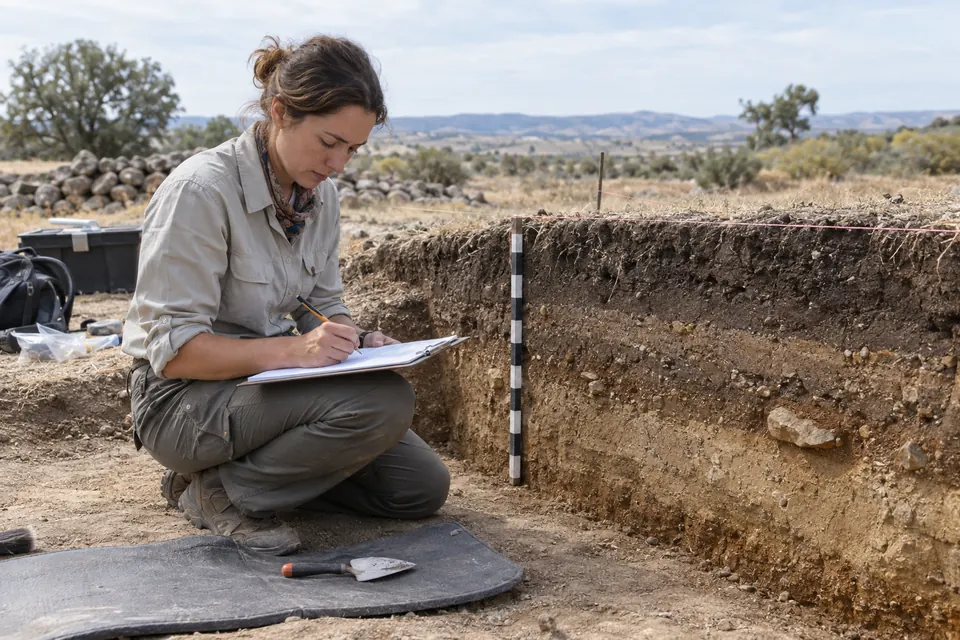
Explore and study
Notice what lies around a find
An archaeologist records the layers beside her before moving on. The patient work around an object helps others ask when, where and how it came to rest there. As you examine a proposed connection, look for that surrounding evidence as carefully as the object itself.
The National Park Service explains how field observations are recorded. Read that practice beside the Church's guidance on Book of Mormon geography.
Bring a question from this picture into the reading. Ask about this part of the study.
Horses: distinguish new discoveries from the wrong time period
A 2023 study in Science combines archaeology, genetics, and Indigenous knowledge to investigate how domestic horses spread through the Great Plains and northern Rockies. It places horses within Indigenous communities earlier than some older accounts assumed, but the relevant dates are in the period following European introduction, including the late sixteenth and seventeenth centuries. William T. T. Taylor and colleagues, “Early dispersal of domestic horses into the Great Plains and northern Rockies”.
This is important research on Indigenous history. It is not evidence for horses in the Americas during the Book of Mormon narrative. A headline saying horses arrived “earlier than thought” must be read with its actual dates.
Horses remain an open historical question for this comparison; this study does not settle it. A proposed answer needs securely dated remains in the relevant place and period, or a carefully argued explanation of the translated term. These are different proposals, and neither becomes established merely because the archaeological record is incomplete.
Metals: the material, technique, and date all matter
Ancient Americans developed sophisticated metalworking traditions. A study of metalworking at Mayapan describes copper-based materials, alloys, and technical practices, situating Mesoamerican metallurgy's introduction around AD 650. “Metalworking at Mayapan, Yucatan, Mexico: Discoveries from the R-183 Group,” Ancient Mesoamerica.
Those achievements deserve accurate description. They are not interchangeable with evidence for an earlier iron-and-steel industry. Finding a copper object, working native metal, smelting ore, and manufacturing steel are materially different claims. A comparison with the Book of Mormon must specify which claim is being tested and the dates of the evidence.
BYU's Religious Studies Center acknowledges that apparent anachronisms, including horses and steel, raise real interpretive difficulties. It outlines approaches involving translation and ancient context without presenting every difficulty as settled. Becerra, Easton-Flake, Frederick, and Spencer, “Common Questions”. Honest discussion can describe proposed answers while allowing a reader to recognize the work still needed.
DNA: evidence about populations and limits on identification
Ancient DNA research strongly supports deep connections between the founding populations of the Americas and northeast Asia/Beringia. An analysis of an ancient Alaskan genome models early population relationships long before the Book of Mormon's historical setting. Moreno-Mayar and colleagues, “Terminal Pleistocene Alaskan genome reveals first founding population of Native Americans,” Nature.
The Church's DNA essay acknowledges the predominantly Asian ancestry found in Indigenous American populations. It also explains why a small migration could be difficult to identify after population mixing and lineage loss, especially when no known reference sample establishes the migrants' genetic signature. The essay cautions against speculative pro-Book-of-Mormon DNA claims as well as overly sweeping rejection arguments. “Book of Mormon and DNA Studies”.
These distinctions prevent two mistakes: claiming that DNA has identified Lehi's descendants, and treating lack of an identifiable lineage as identical to proof that no small migration occurred. They also mean that a model claiming virtually all Indigenous ancestry comes from a recent Near Eastern migration cannot simply ignore the actual genetic evidence. Indigenous peoples have their own histories; respect for those histories is part of careful study.
Let the study lead you toward Jesus Christ
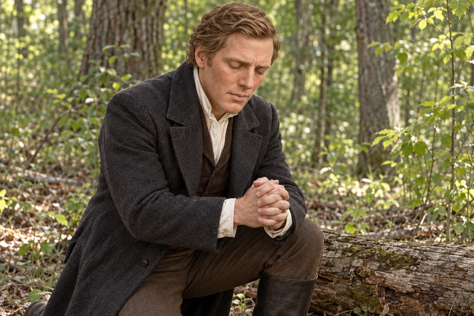
Explore and study
Bring the question to God
An adult Joseph bows in a quiet place of prayer. The stillness gives room to reflect on seeking God with an honest heart. Consider what you can bring to prayer today, including the questions you cannot yet resolve and the gratitude you can already express.
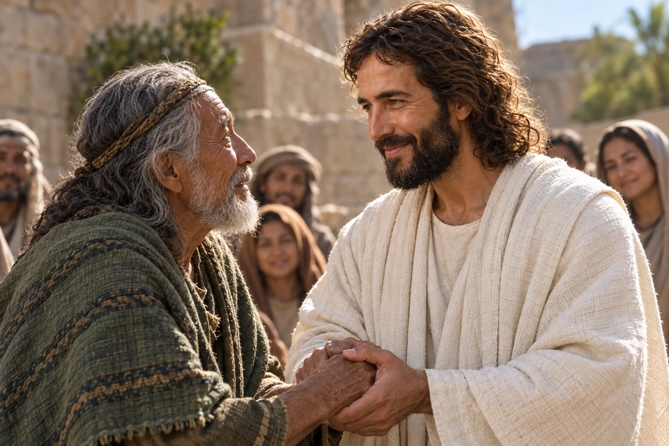
Explore and study
A welcome for the one
Jesus Christ meets an older man with attentive warmth. Their joined hands and shared gaze invite a moment of reflection on being known and welcomed by the Savior. Let this imagined encounter lead into the scriptural account of His personal invitation to those gathered around Him.
The witness the book invites each reader to seek
The Book of Mormon's invitation ultimately concerns Jesus Christ. Moroni asks readers to remember God's mercy, ponder the record, and ask God sincerely with faith in Christ; his concluding invitation is to come unto Christ. Moroni 10:3–5, 32. That is a spiritual invitation, not an archaeological experiment that yields a universally reproducible measurement.
Alma describes beginning with a desire to believe and then nourishing the word, discerning its growth over time. Alma 32:27–43. A visitor can study scholarship, pray, and observe whether living the book's teachings deepens repentance, love, and trust in the Savior. Intellectual inquiry and spiritual experience need not be forced into competition, but they should not be mislabeled as the same kind of evidence.
As you read, consider: What does this record help me understand about Jesus Christ, and what will I do with that understanding today?
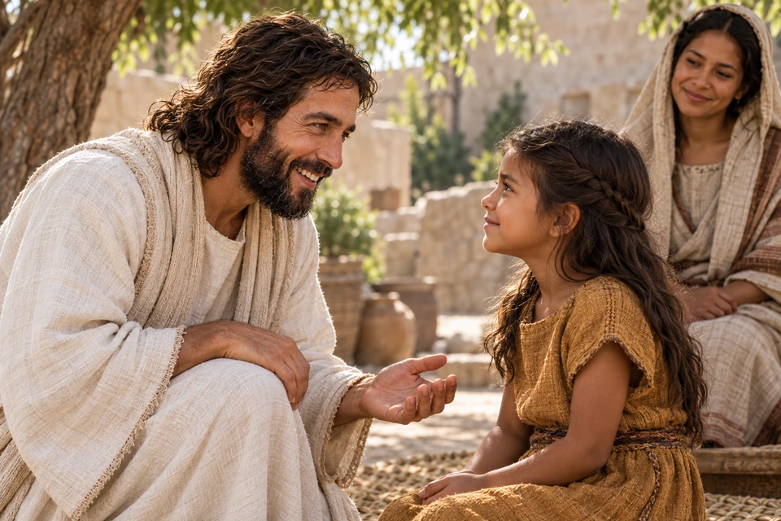
Explore and study
At a child’s level
Jesus Christ bends to meet a young girl at her level while an attentive woman stands nearby. His warmth gives the encounter a sense of safety and belonging. Consider how attentive listening and gentle words can help a child feel seen and welcomed.
A welcome that becomes personal
Read the Savior’s invitation to approach Him in 3 Nephi 11:14–17. Then spend time with His attention to the sick and the children in 3 Nephi 17:5–24. Notice the people He sees and the time He gives them. What would it mean to make room for someone that way today?
You do not need to settle every historical question before reading with sincerity. Bring both gratitude and uncertainty into your prayer. Let the study be patient enough for a difficult question and practical enough to change how you treat another person.
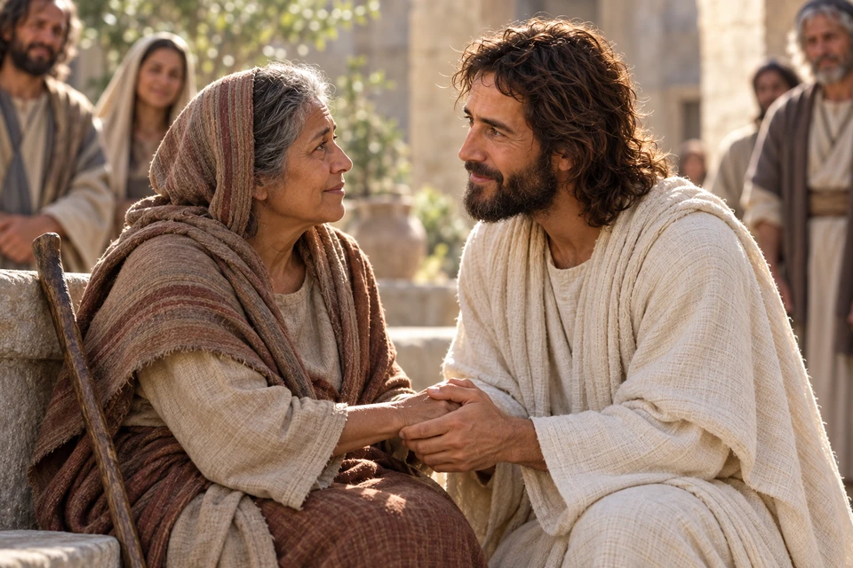
Explore and study
Be present with the person before you
Jesus Christ bends toward an older woman and meets her gaze with quiet compassion. Their joined hands bring the encounter close. Consider what it means to offer another person your attention, without rushing their words or deciding what they need before you have listened.
A careful way to continue
Explore and study
Make room to learn together
Three people share a quiet moment around an open book, with a notebook close at hand. Their attention suggests the value of reading, listening, and leaving room for questions. Consider one person with whom you could study a passage or discuss something you hope to understand.
Choose a claim small enough to investigate. Write down the observation, the proposed explanation, and one question that remains. Read the linked source in context before sharing a conclusion. When two authors disagree, look for the point where their reasoning separates.
| Kind of material | Question to ask | Keep the conclusion within reach |
|---|---|---|
| A document or artifact | What survives, and how is it dated? | Distinguish the visible object from a proposed identification. |
| A linguistic or literary pattern | What was counted, and what comparisons were allowed? | A pattern needs an explanation; it does not choose its own explanation. |
| A witness account | Who reported what, and how was the report preserved? | Evaluate the actual testimony without enlarging its scope. |
| A spiritual experience | How am I responding to God and to Christ’s teachings? | Describe personal conviction honestly without presenting it as a laboratory result. |
Questions for personal study or a conversation
- Which detail can I point to directly in the source?
- What assumptions connect that detail to the conclusion I find persuasive?
- Have I read a thoughtful alternative explanation?
- What would cause me to qualify or revise my understanding?
- How can this study help me listen more carefully and follow Jesus Christ more fully?
This guide distinguishes official Church teaching from the arguments of individual scholars. An institutional publisher does not make every author’s interpretation Church doctrine. Linked sources include documentary editions, original research, museum records, scripture, and official teaching; they serve different purposes.
Source library
Return to the original texts and research through the links beside each discussion. These starting points offer longer study: